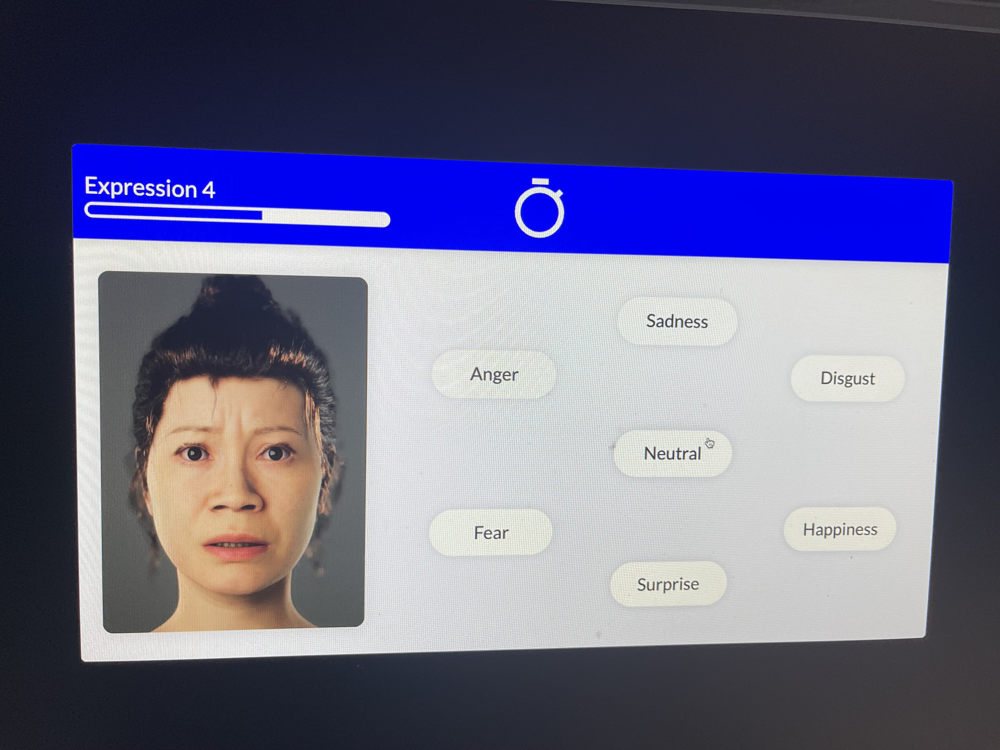
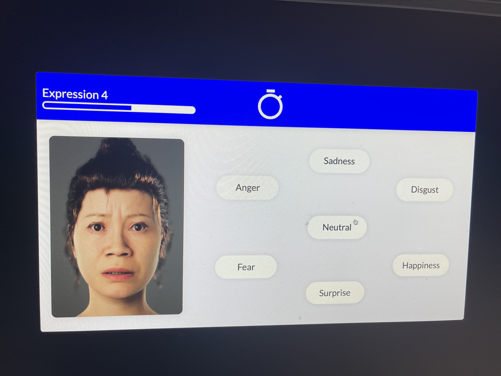

🚨 Don't Fall for This Scam
Online you'll mostly see positive testimonials about this company because negative reviews get removed or hidden. They'll say anything to get you to sign up. You're better off applying to jobs yourself and saving your money, instead of paying for this overpriced service at projobhunter.com and getting nothing in return.
My Experience: 5 Weeks of Broken Promises
Week 0: The Promise
I signed up with Pro Job Hunter after their HR told me on a call that I'd get at least one guaranteed face-to-face interview within 5 weeks. That was the whole reason I paid the price, even though the service was expensive.
Weeks 1-5: Empty Promises
Five weeks went by with no interviews. Each week they told me to "just wait." Now they claim the technical assessments I received count as interviews.
The Bait and Switch
These weren't interviews - no phone calls, no face-to-face, not even a basic screening. Just one poor-quality assessment. They're re-defining "interview" after the fact to avoid honoring their guarantee.
The "Technical Assessments" That Aren't Technical
As a software engineer, I'm used to coding challenges (like LeetCode-style questions). Instead, these were pointless exercises that wasted my time:
🙄 Emotion Test
Identify people's emotions over 50+ repetitive prompts

 

⏰ Reaction Test
Stop a clock on a certain number, repeated 80+ times

➡️ Arrow Test
Click the direction of an arrow (left, right, up, down), again, 80 times
These weren't technical assessments at all. They were tedious, mind-numbing tasks that wasted time and left me exhausted, with zero value toward an actual interview.
The Bottom Line
Overall, it was a disappointing and overpriced service that failed to deliver what was promised. I never received the guaranteed face-to-face interview — only a meaningless assessment, which is not an interview.
This is misleading and preys on people desperate for jobs. Save your money and apply to jobs yourself.
Help Spread Awareness
If this helped you avoid this scam, please share this page with others who might be considering Pro Job Hunter's services.